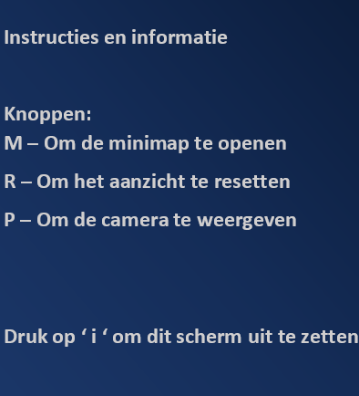

<div class="body-div">
    <video id="video" autoplay style="display:none"></video>
    <div id="minimap" style="visibility: hidden">
        
        <button class="mm_btn" id="btn_l4" style="position: absolute; left:6%; bottom:82%;"></button>
        <button class="mm_btn" id="btn_r4" style="position: absolute; left:76%; bottom:82%;"></button>
        <button class="mm_btn" id="btn_l3" style="position: absolute; left:6%; bottom:57%;"></button>
        <button class="mm_btn" id="btn_r3" style="position: absolute; left:76%; bottom:57%;"></button>
        <button class="mm_btn" id="btn_l2" style="position: absolute; left:6%; bottom:33%;"></button>
        <button class="mm_btn" id="btn_r2" style="position: absolute; left:76%; bottom:33%;"></button>
        <button class="mm_btn" id="btn_l1" style="position: absolute; left:6%; bottom:9%;"></button>
        <button class="mm_btn" id="btn_r1" style="position: absolute; left:76%; bottom:9%;"></button>
    </div>
    <div id="infobox" style="visibility:visible">
        
    </div>
    <div id="scene-container">
    </div>
    <button id="gazePauser"onclick="gazePauser()">Toggle webgazer</button>

</div>